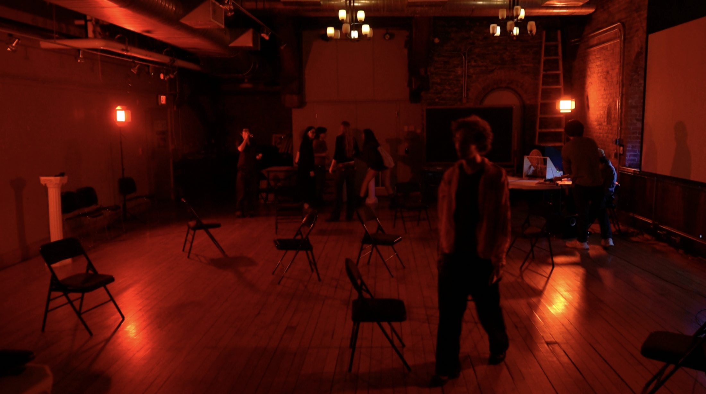
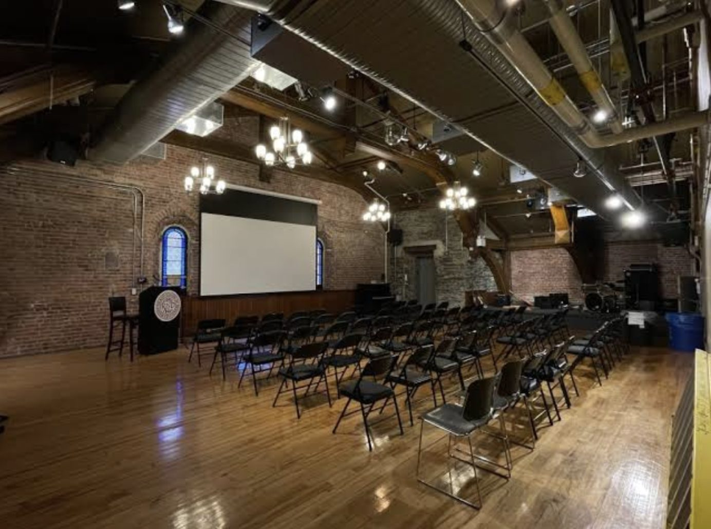
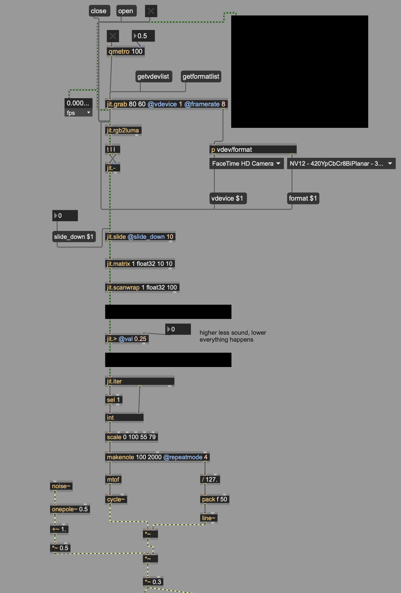
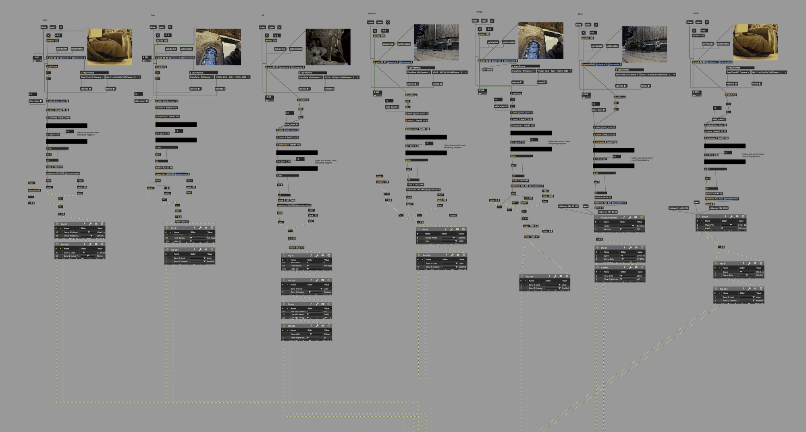
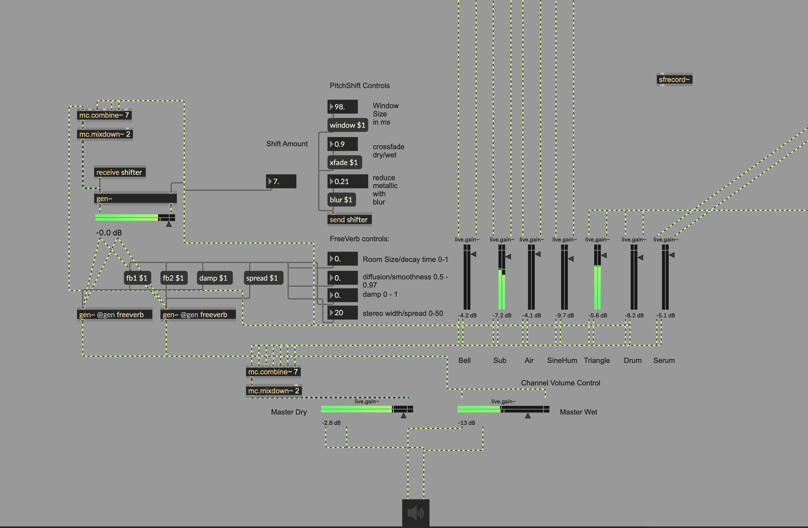
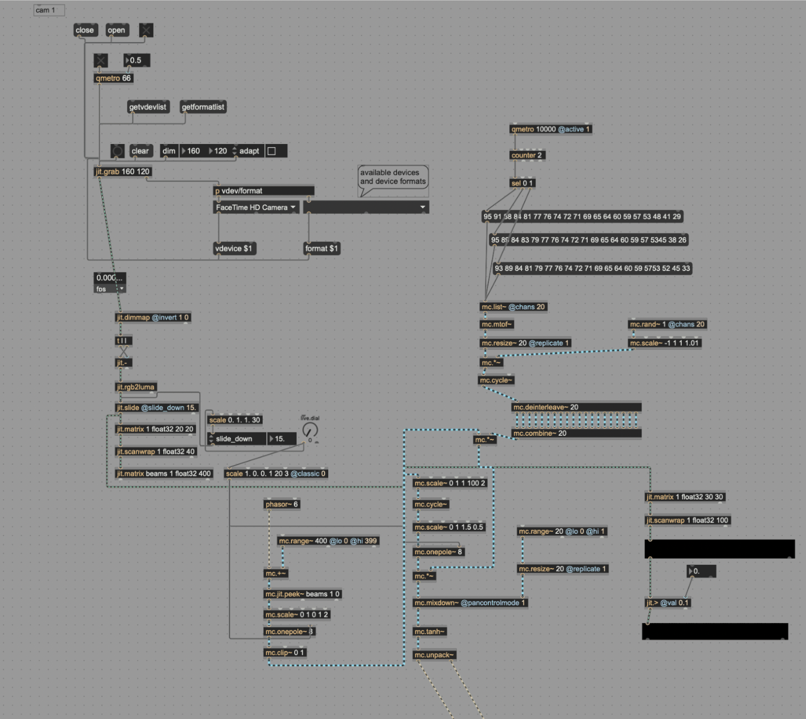
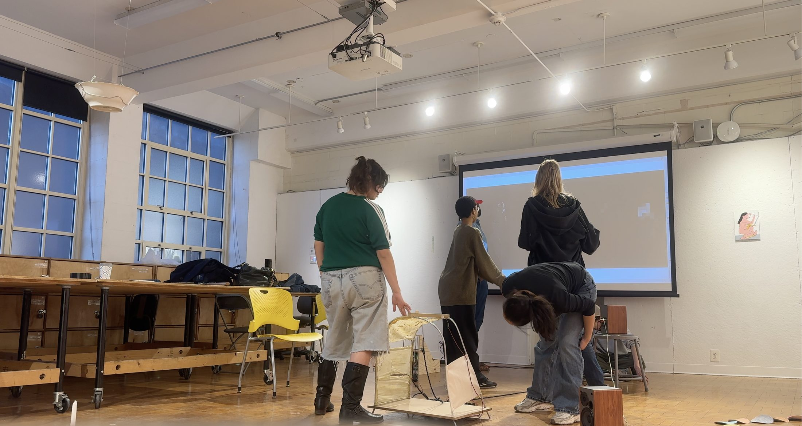
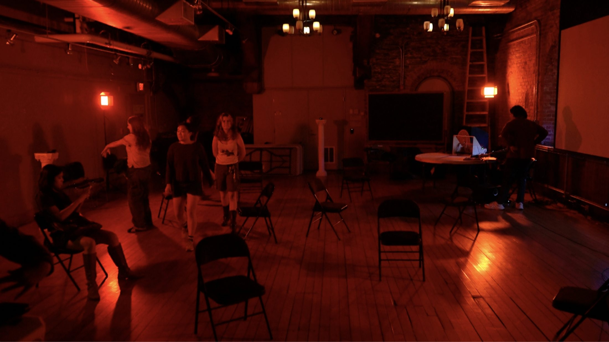

Iteration / Improvisation / Exercise — Motion-Responsive Synthesis
Tap Room
| Year | 2026 |
|---|---|
| System | Motion Detect Synth — system and live performance |
| Materials | USB webcams, laptop, Max/MSP/Jitter, self-assembled modular synthesizer, MIDI controller, audio interface, speakers, subwoofers |

Overview
Tap Room in its essence is a room scale motion responsive performance system that I developed through Max MSP Jitter in which the movement of bodies through space becomes data for musical input. Four cameras in total, three webcams mounted on pedestals and a laptop webcam, are mapped to different regions of the space. It continuously feeds human motion based on light into MIDI data that triggers and shapes a seven voice synthesis system in Max. The audience and performers do not play any instrument in the traditional sense. The room becomes the instrument, thus any movement is its notation. This project plays on the idea of trust or rather distrust. The system simply watches. It offers no interface, no instructions, no imagery of what it sees. The space encircles the senses and sound is evidence.
Every room that we set foot into already has opinions of its own, about how one should move through it. Fundamental to architecture, doorways call out at us, furniture arranges us, sightlines tell us where to stand and what deserves attention. It is choreographed and rehearsed. This performance enlarges such quiet, beneath the surface conditioning audible. Nothing in the room announces itself as an interface, no image is offered to the visitors. The moment of realization of oneself being observed.
The system itself is built on a contradiction. Even though its mapping is deterministic, meaning that different zones are mapped to its respective voices, motion intensity to pitch register, fixed thresholds, yet it never truly performs the same way. Same room, same patch, same numbers yield different results each time. It is composed by whoever decides to walk through and the ways in which they walk through the space. It behaves like a graphic score, a complete set of rules that cannot really predict its own realization. Collective motion drives the whole field toward density losing control. The rules must be learned through moving, listening and trial and error.
It is also under such circumstances where the performance can be honest. It does not celebrate surveillance technology. It takes the logic of surveillance, such as cameras, thresholds, continuous adjustment and measurement and turns it into something that surveillance was never able to offer due to its nature. Having the observed be aware of their observation. The room must confess each observation out loud. Where surveillance controls movement, self regulating under gaze, observation returned as sound creates a different circumstance. It invites people to move, try, and play. A gaze that produces movement rather than suppressing it. Even scattering the chairs plays an act in all of this, obstacles, like a playground, shaping how the bodies drift throughout the space therefore shaping the sound. Everything present within the zone is both input and out and listener, disturbing the very space they are trying to perceive.

Vision and motion analysis
Each camera feed is captured in Max/Jitter at a deliberately low
resolution of 80×60 pixels at 8 frames per second, enough to
detect accurate motion and reduce CPU strain. Each frame is then
converted to luminance using jit.rgb2luma and downsampled
to a 10×10 float32 matrix, rendering the image down to a grid of
light and dark brightness values. Motion is isolated through frame
differencing with jit.-, subtracting each frame from the
previous one so that only any change remains. The difference matrix is
then passed through a threshold (jit.>), with
sensitivity tuned independently per zone with values ranging from 0.21
to 0.3. This number was crucial for determining how much sound was
happening in accordance to the movement. Afterwards it was smoothed
with a downward slide (jit.slide @slide_down 10) so that
energy decays naturally rather than sharp cut off. Each zone’s
matrix is then scanned and summed into a single continuous motion
value, polled every 100ms.

Motion to Sound
Each zone’s motion value (0-100) is scaled into a MIDI pitch
range that is unique to its voice, the lower frequency zone spanning
notes 20-48, highest in my patch were 79-88, giving characters to these
voices. These values drive seven independent voices with each camera
mapping to two voices and one voice to a laptop webcam. The seven
voices are as follows — Sub, SineHum, Bell, Air, Triangle,
Percussive voice, and a VST plugin instrument via makenote
object with voice specific durations ranging from 800ms to 2200ms. The
native Max voices/synth are built from cycle~,
tri~, and filtered noise shaped through lores~
resonant lowpass filter at specific cutoffs, and line~
ramps interpolating parameter changes to avoid zipper noise. Motion in
different zones produce different notes with different instruments in
different registers like a big ensemble.

Processing and performance control
Seven voices are combined into a multichannel stream
(mc.combine~ 7) and mixed to stereo. Two custom DSP
processor built in gen~ shapes the master output: first
being a pitch shifter with a phasor driven sample delay crossfaded
through 180 degree out of phase squared cosine window, with precise
controls for window size, shift amount, and blur, as well as a Freeverb
reverb with control over damping, diffusion and decay parameters.
Beneath the motion-driven system, a DIY modular synthesizer provided a
quiet ambient drone that comes in and out when the room fell still,
such that stillness remains audible. During the performance, I operated
a MIDI controller mapped to individual channel gains, master dry/wet
and parameters on pitch shift and freeverb, live mixing the
“ensemble” in response to the room. The full output was
recorded to disk via sfrecord~.
Note: The system has no visual output. Projections of the camera feeds or motion matrices were considered, however it would’ve restored vision as the authoritative sense, the very hierarchy the piece attempts at destabilizing. The only feedback the room offers is sound. The relationship between motion and sonic must be discovered by ear and body alone.

An earlier version of the system was inspired by beam-based motion
synthesis experiment I had researched where it took a totally different
approach. The camera image was divided into twenty vertical beams with
each being assigned to a fixed pitch from a hand tuned scale, and the
motion matrix was read at audio rate using mc.jit.peek~
driven by a scanning phasor~. Therefore, movement through
a beam excites its own voice in a 20-channel mc.cycle~
oscillator bank. It is analogous to having the room strung like a harp.
This version of the system required the camera to capture at a higher
resolution (160×120 pixels, analyzed and tested on both
20×20 and 30×30 grids) with more sensitive thresholds and
audio rate response was beautiful at times. Practically, the CPU had a
hard time handling everything. Audio rate peeking into 400 cell
matrices across multiple simultaneous camera feeds left me with
noticeable latency and hard capped the system to three cameras,
sometimes two. Stability became a real issue and the system could not
scale to the whole room. The final resolution had to have been an
architectural redesign in response. Motion analysis moved from audio
rate to control rate, polled every 100ms, capture resolution dropped to
80×60 on a 10×10 grid and continuous excitation was
replaced with event based note generation in which the overlapping
durations preserve the perception of continuity at a fraction of the
computational loss. It is important to note the trade off ultimately
sacrificed granular responsiveness for stability and reliability, seven
reliable, controllable zones instead of twenty beams that were at most
times unpredictable.

Raw frame difference values were extremely noisy, fluctuating with
camera grain, lighting shift and the actual quality of each individual
camera, which initially caused the synthesis to jump erratically. It is
also at this point I recognized the laptop’s (Macbook) inability
to recognize two of the same webcam with the same model and it had had
to be distinct models of webcams. The solution was built in layers from
jit.slide putting threshold to reject sub-movement noise,
smoothing so that energy decays gradually, and line~
interpolation ramps so that parameter changes glide instead of step,
eliminating any audible zipper noise. Sensitivity itself also became a
key parameter compositionally, with the zone’s threshold tuned
independently.

The Motion Detect Synth system was performed during the Senior Group Painting Show titled “Repeat After Me” at the Rhode Island School of Design’s Memorial Hall Tap Room and the site is inseparable from the work itself. Tap Room is traditionally one of RISD’s sonically active spaces: a room used by student bands whose rehearsal echo down Benefit Street at night. The piece acknowledges that history rather than ignoring it, installing a listening system in a room already culturally marked as a place where sound is made. Bringing the space fully to life required speakers and subwoofers positioned through the room with an interface handling all the routing, so that the synthesis genuinely had a physical presence rather than just a heard one.
Anyone who came to see the painting show became part of the piece simply by entering the room. There were no performers, nothing was choreographed and minimal instructions were given besides directions up to the Tap Room.
